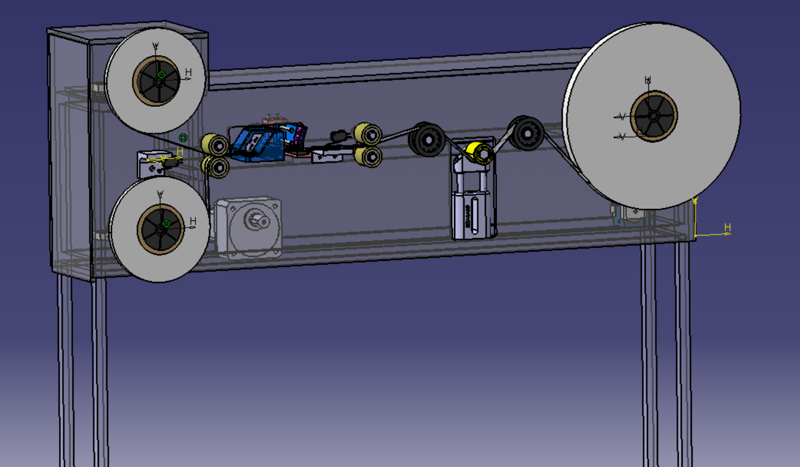

Projet 1
Une bobineuse est une machine utilisée pour enrouler des matériaux tels que du fil, du câble, du ruban ou du papier sur une bobine. Les bobineuses sont souvent utilisées dans l'industrie de la fabrication pour transformer de grands rouleaux de matériau en bobines plus petites qui peuvent être facilement transportées et stockées.